The challenge
OCBC's chatbot ran on rules — keyword matching, fixed replies, a hard ceiling on anything unusual. The question was whether a Gen AI model could replace it, and eventually handle more: calculations, guidance, real decisions.
But a chatbot that gets a restaurant wrong is annoying; one that gets a customer's savings wrong is a different category of problem. In banking, hallucination isn't a rough edge — it's a trust and compliance risk. So before committing to build, the team needed a cheaper answer to a basic question:
What do customers actually ask, and can Gen AI handle it well enough to be worth it?
Research & discovery
The work ran across four connected pieces, each building on the last.
Phase 1 competitor research (Sep 2025)
Before designing anything, I mapped 30 competitors and parallel-world inspirations — 4 local banks, 5 regional banks, 8 global banks, 8 payment/trading/lending/insurance apps, and 6 non-financial products. The goal was to understand common design patterns (entry points, search bars, conversational UIs) and standout ones, and see where AI-powered search could realistically add value in a banking context.
Diary study, 13 participants (Nov 2025 – Jan 2026)
A single session tells you what someone thinks of a chatbot. A week tells you whether they keep using it. We ran a diary study — but rather than build anything, we used ChatGPT as a proxy, prompted with guardrails and scope to stand in for an OCBC chatbot. Participants got realistic financial context via synthetic profiles — real customer profiles I cleaned and masked (products and figures adjusted to remove any personally identifiable information, behavioural shape preserved). The week ran on daily tasks, pulse surveys on Days 3 and 7, and exit interviews.
My contribution here was the study operations end-to-end — masking profiles, participant setup, daily tasks, survey and interview design — and co-writing the research report with one other team member. The report was the biggest piece: turning 958 prompts and a week of diary entries into something product, marketing, and the contact centre could act on.
Workshop with product managers and owners
Research findings only matter if they get built. To bridge that gap, we ran a workshop with product managers and product owners, walking them through the intents customers had surfaced — from the diary study and from real questions logged against the current Dotcom chatbot. They drafted answers in their own product voice, seeding the knowledge repository the eventual Gen AI model would draw from.
Phase 2 competitor research (Jul 2026 – present)
A second, deeper round of 38 competitors — this time focused on design patterns rather than viability. Where does the entry point live? Header icon, sticky bubble, persistent search bar? How do the best examples handle escalation, personalisation, and trust? Still in progress, and actively informing (though not yet confirming) the screens for the build now underway.
What we found
1. Expectations were low, then flipped — and kept moving.
Participants arrived expecting what they'd seen before: keyword replies, canned redirects, a link to a help page. That's what "bank chatbot" meant to them.
4.76 out of 5 on first impression
But the scores dipped as the week went on. Ease and naturalness went from 4.5 on Day 3 to 4.15 by Day 6. Helpfulness went from 4.3 to 4.08. Small drops, but consistent — as novelty wore off, people started judging it on whether it was actually useful, and the bar moved.
A single session would have caught the 4.76 and missed the dip entirely. It's the clearest argument I have for why the study needed to run across a week.
Over the seven days:
- 958total prompts (713 daily task, 245 weekly task)
- 7.5minutes average daily engagement
- 10consideration events
- 5product conversions — credit cards, precious metals, housing loan, unit trust
That last row is the one I'd point at. Five people moved from asking questions to choosing a product, inside a week, talking to a proxy.
2. People weren't asking for support. They were asking for help deciding.
We mapped 72 topics across six journey stages, and the distribution was the surprise.
| Stage | Topics | What they were asking |
|---|---|---|
| Aware | 17 | "What is this?" — broad discovery |
| Consider | 22 | Evaluating options, trade-offs, eligibility |
| Decide/Apply | 3 | Requirements, thresholds, "will I qualify?" |
| Use/Optimise | 16 | Getting more out of a product they already hold |
| Maintain/Support | 9 | Upkeep, fees, statements |
| Expand/Explore | 5 | Adding new products |
Consider and Use/Optimise held more than half the topics between them. People weren't using it as a help desk — they were using it to think. And Decide/Apply being nearly empty suggests that once they felt informed, they moved fast.
That reframes what the chatbot is for. Less FAQ, more thinking partner.
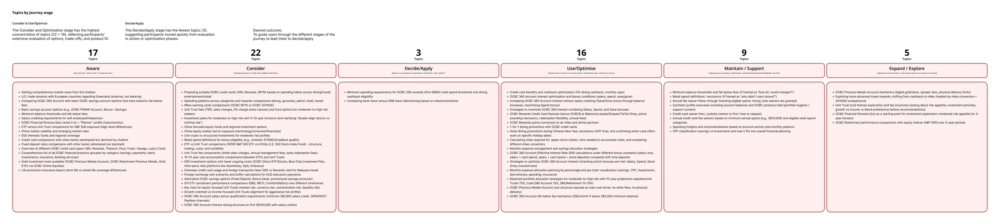
3. Three themes for what it has to get right
Conversational intelligence. People want a guided way in but the freedom to go deeper on their own terms. There's an opening to move from answering questions to surfacing things before they're asked. And different questions need different formats — some answers want a table, some want a chart, some want a sentence.
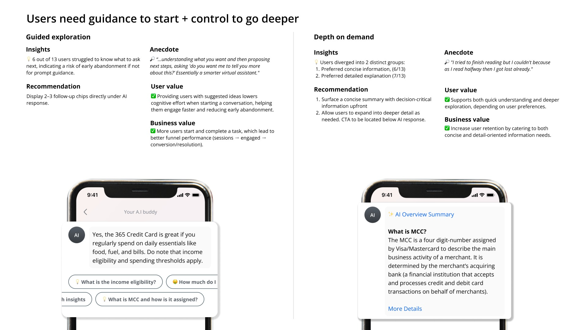
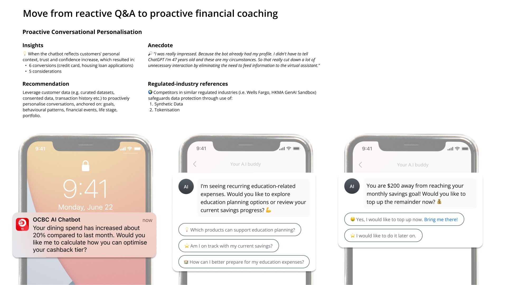
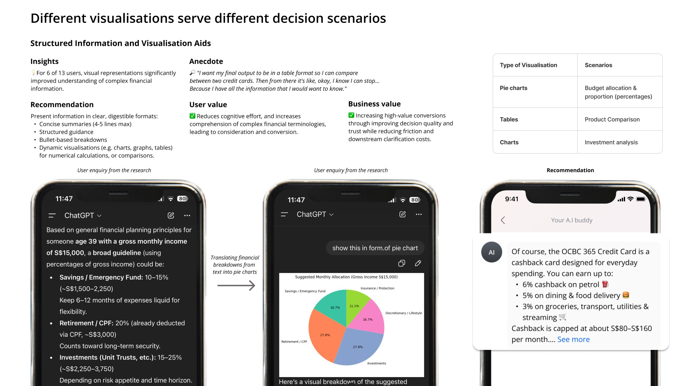
Decision enablement. Trust is the whole game. Outdated information broke confidence quickly, and once broken it didn't recover within the session. Embedded actions helped people move from reading to doing, but final decisions wanted a human hand-off.
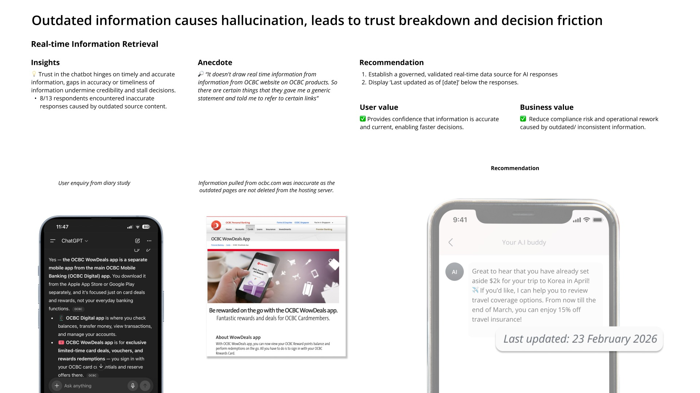
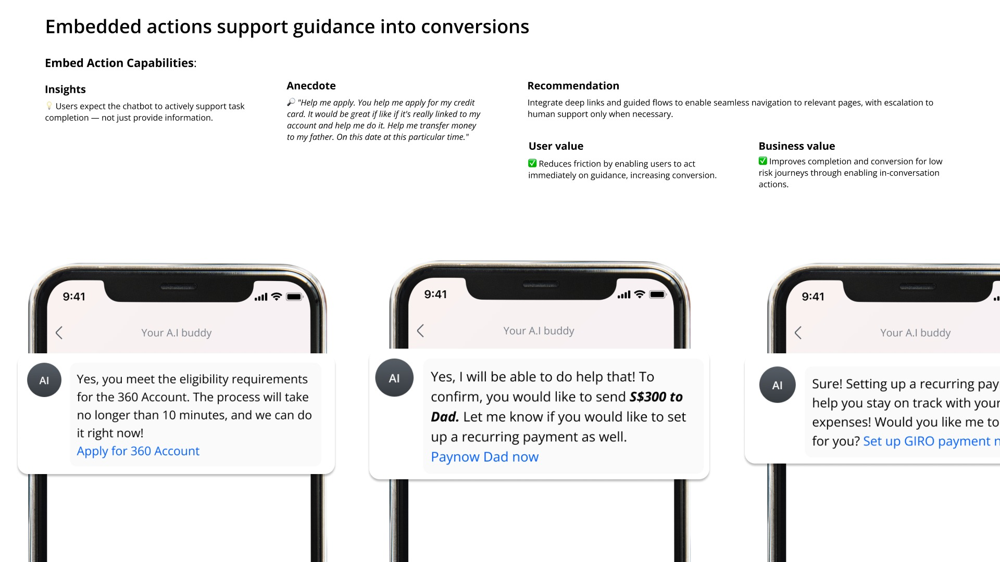
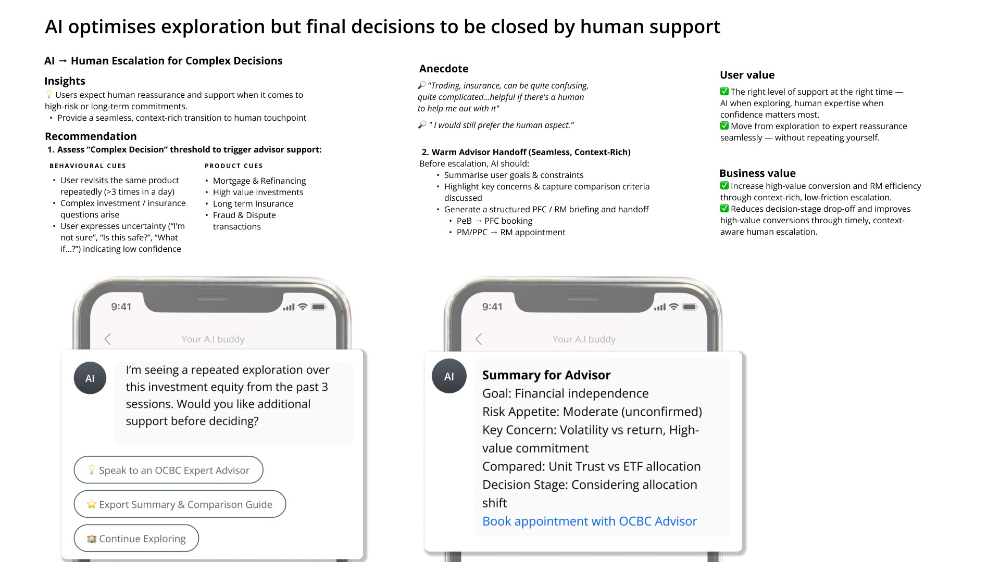
Ecosystem positioning. Positioned as an optimisation tool rather than a search box, the chatbot keeps customers comparing and deciding inside OCBC — rather than leaving to research elsewhere.
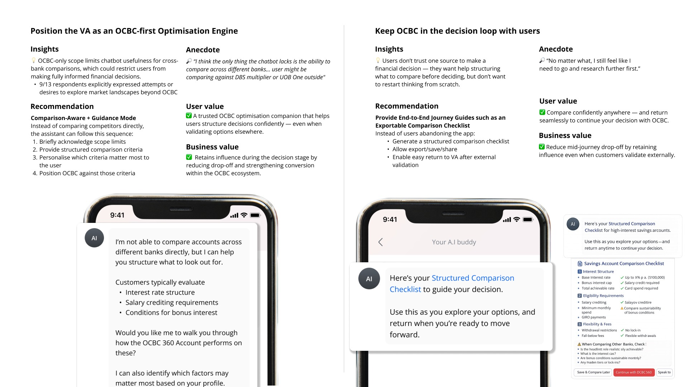
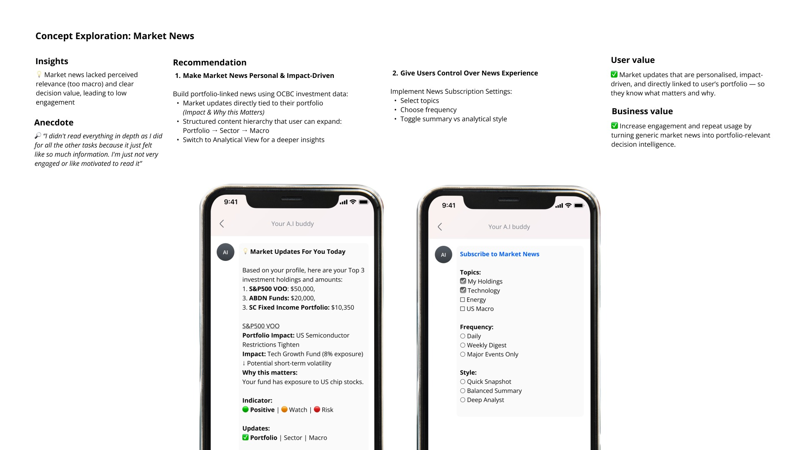
The solution
The findings and the workshop together produced the foundation the actual build needs.
A validated intent library.
72 topics across six journey stages, each grounded in real customer language.
A knowledge repository seeded by the people who own the products.
The workshop paired diary-study intents (and real Dotcom chatbot logs) with answers from product managers and owners across Core banking, Discovery, Contact Centre, and Wealth Management. That repository is what the Gen AI model will draw from.
Design direction from the second competitor round.
38 competitors examining how the best in the market handle entry points, search patterns, escalation, and trust cues. In progress, and informing the screens being drafted now.
Phase 1 beta is scheduled for November 2026.
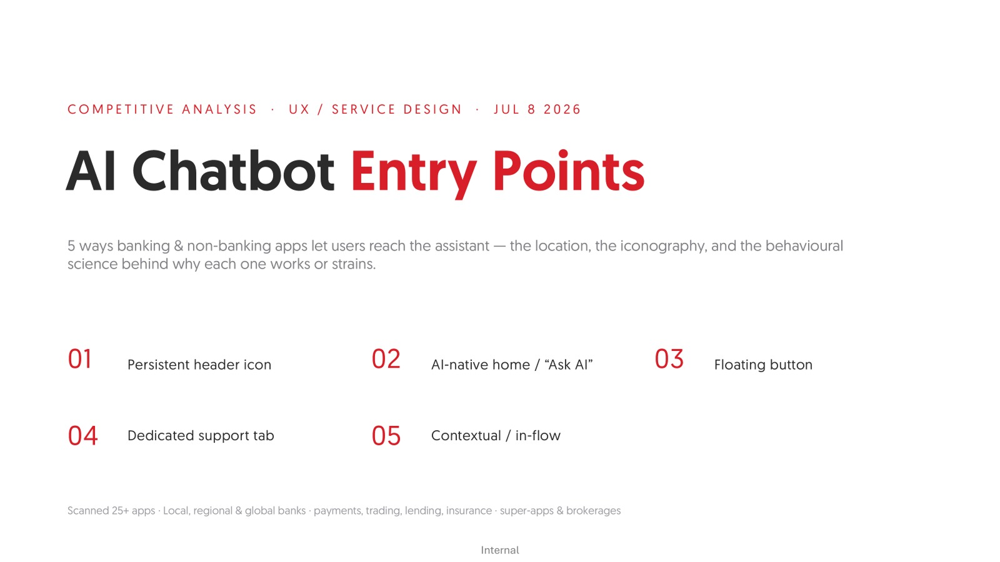
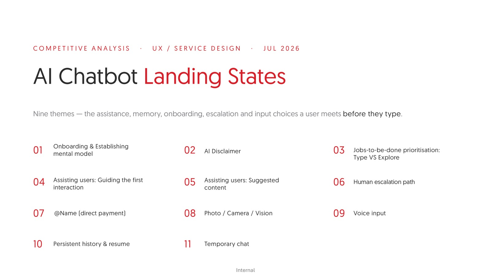
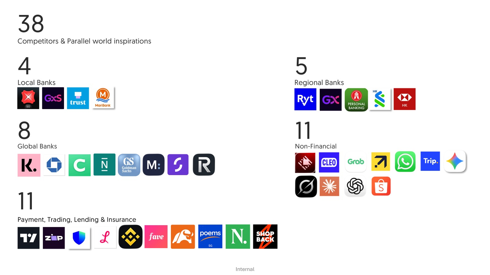
Outcome & reflections
5 product conversions from 13 participants, in a single week
The proxy drove 5 product conversions from 13 participants in a single week, covering credit cards, precious metals, a housing loan and a unit trust. That was enough for the team to commit to the build, and the research is now embedded end to end: intents, answers, design patterns.
The hardest part was that the ground kept moving. Between the first competitor round and the second, what these models could do changed substantially, which meant our own research had to keep pace. Questions we had settled in one round were worth reopening in the next, and a finding about what felt impressive in late 2025 did not necessarily hold by mid 2026. Researching a moving target means accepting that some of your conclusions have a shelf life, and building in the checkpoints to notice when they expire.